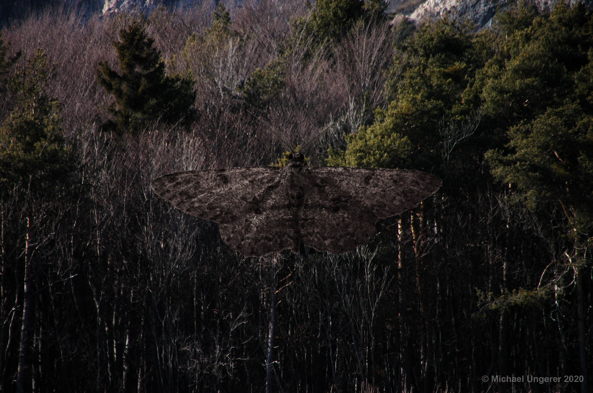
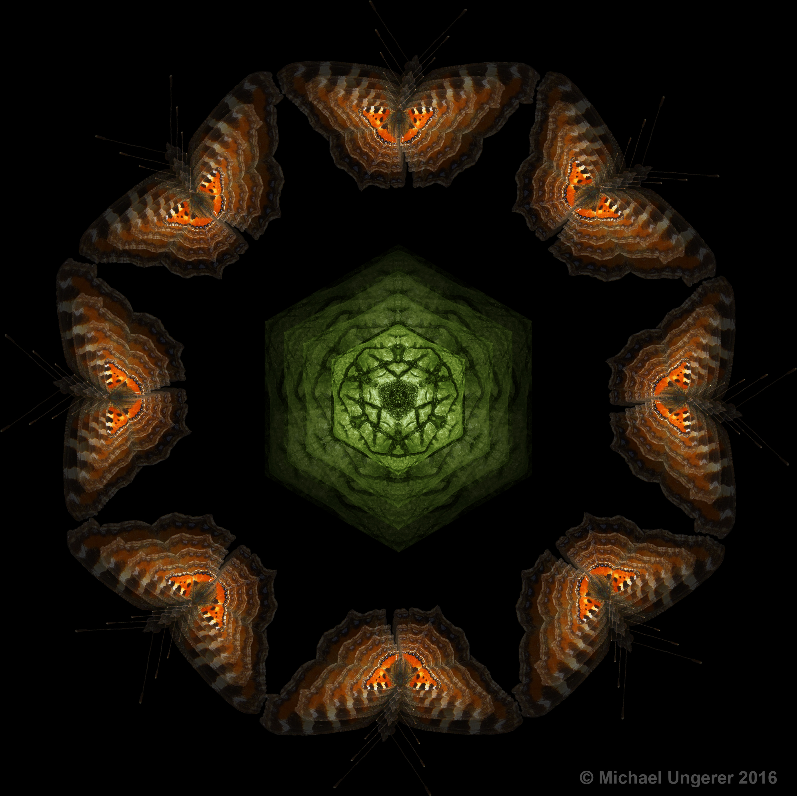
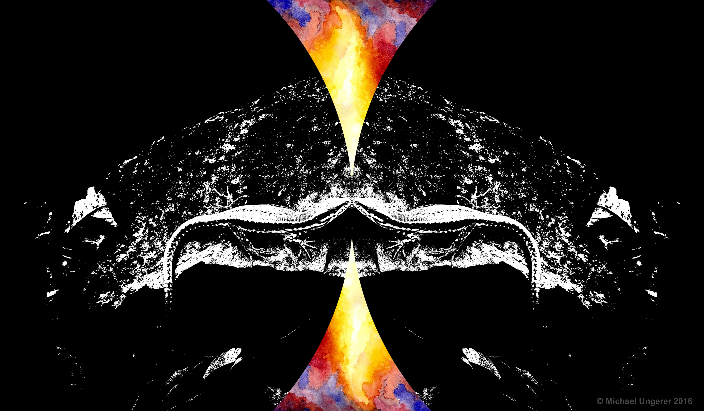
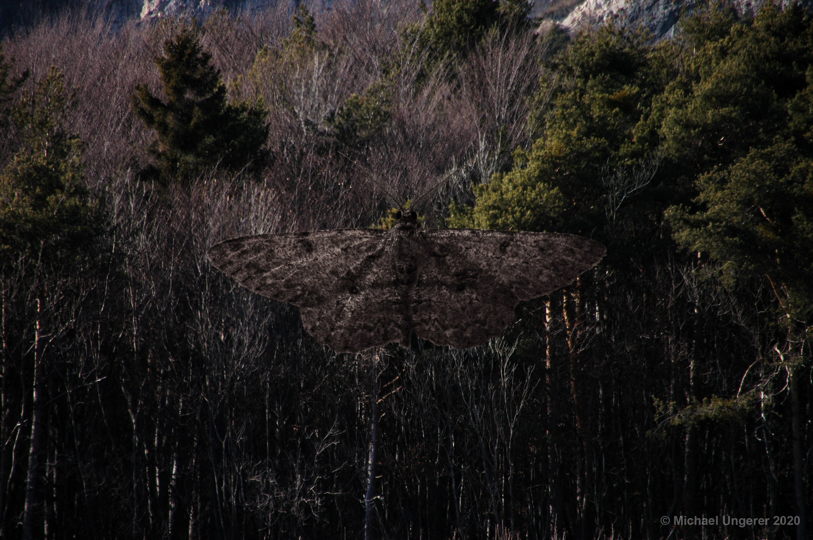
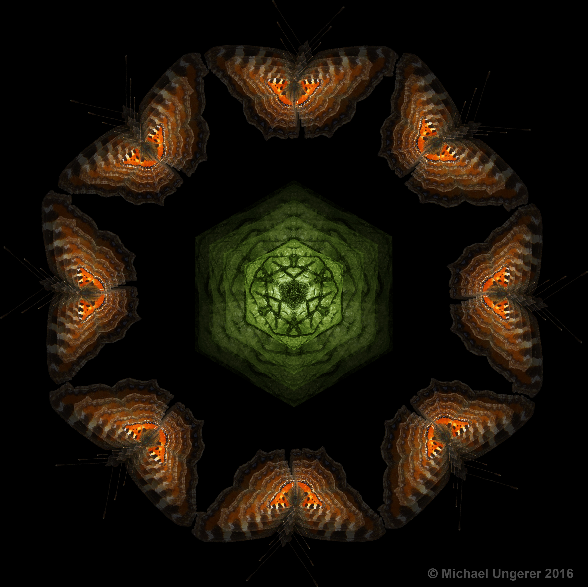
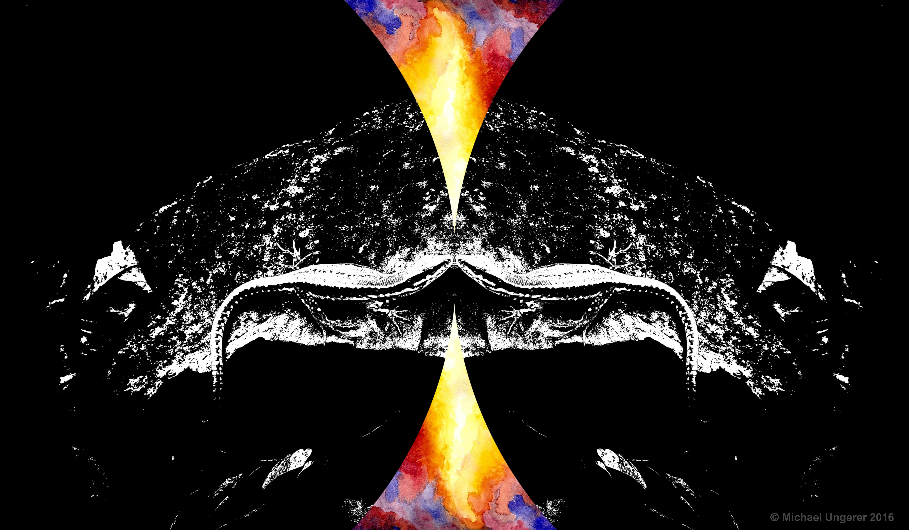

Various works, 2016 - 2021
The digital artworks of Michael Ungerer are combinations of different photographs that have been manipulated and merged into a new image. The intrinsic beauty of animals, regardless of their species, is the main theme of these works.